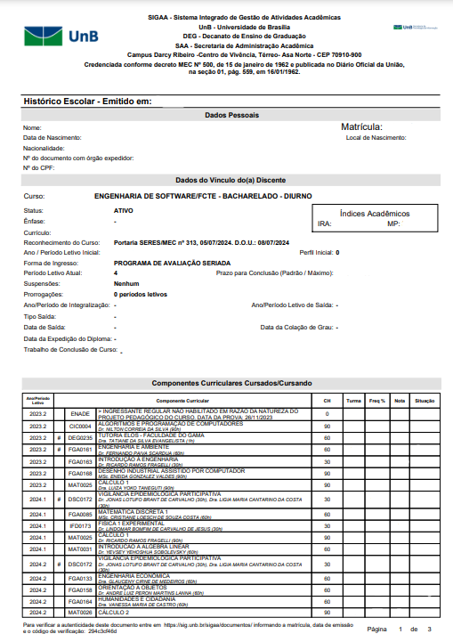

Como obter seu histórico acadêmico

2º PASSO - Selecione "Emitir Histórico"
No menu lateral, clique em Ensino e depois em Emitir Histórico.

3º PASSO - Faça o upload do PDF para o NoFluxoUNB
Salve o arquivo PDF gerado em seu computador e faça o upload nesta página.
